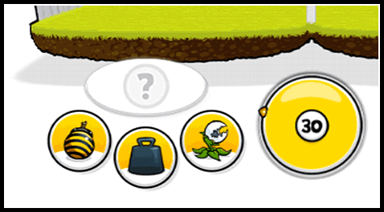
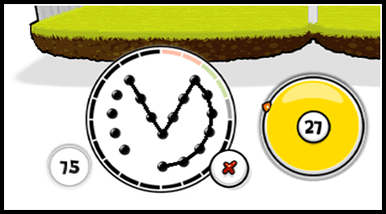

12 |
Attaque |
 |
|

Chaque équipe dispose d'un temps d'attaque pour lancer l'une des trois attaques normales : Plante, Bombe ou Poids. Quand ce temps expire, c'est au tour de l'adversaire !
 Pour exécuter un mouvement offensif, commence par choisir une attaque avec  . Un modèle en pointillés apparaît alors à l'écran. Relie ensuite les points entre eux avec le curseur ! Si tu appuies sur le bouton Annuler pendant que tu tentes le tracé, tu abandonnes l'attaque. . Un modèle en pointillés apparaît alors à l'écran. Relie ensuite les points entre eux avec le curseur ! Si tu appuies sur le bouton Annuler pendant que tu tentes le tracé, tu abandonnes l'attaque.
 Une fois que tu as recréé le modèle, tu peux passer à l'attaque ! Attends le bon moment et lance ton attaque en validant avec . Pense bien à garder un œil sur le chrono ! Si tu tombes à court de temps, ton attaque est annulée !
Il existe 2 sortes d'attaques différentes :
Remarque : tu peux en apprendre davantage sur les différents types d'attaques et les meilleurs moyens de s'en protéger dans le Poulailler. |

 |
 |
 |